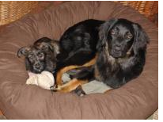
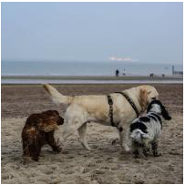
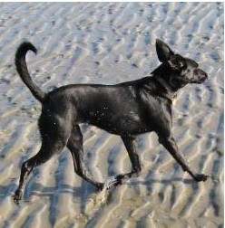
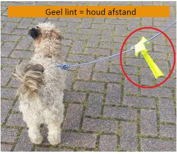

Hoeveel kost een hond?
De aankoopprijs van een hond varieert van 200 euro voor een adoptiehond tot 2000 euro of meer voor een rashond.
Voor de aankoop van een tuig en leiband, een mand, een voerbak, waterbak en kauwmateriaal mag je tussen 100 en 400 euro rekenen.
De vaste kosten voor voer, vlooienpreventie, ontwormingsmiddelen en vaccinaties schommelen tussen 50 en 110 euro per maand. Een grote hond kost aanzienlijk meer dan een kleine. Als de hond ziek wordt, kunnen de kosten oplopen.
Wat heeft een hond nodig?
Huisverstiging
 De hond moet voldoende ruimte hebben om te lopen, te spelen en om zijn behoefte te doen. De huisvesting moet veilig zijn en de hond beschermen tegen koude en hitte. Een droge en comfortabele slaapplaats is verplicht. Dit kan een mand in huis zijn of een hondenhok buiten met isolatie, stro of dekens. Een kennel of een bench (draadkooi) is ongeschikt als permanente huisvesting.

Gezelschap
Een hond is een sociaal dier. Als je één hond hebt, zorg dan voor bekende en bevriende honden als vaste speel- en wandelpartners. Als je een hond een lange tijd alleen laat, dan kan hij ten prooi vallen aan stress en verveling.
voeding
Een hond moet tenminste twee maal per jaar voer gelukt staat: 'complete hondenvoeding'. Pas op met tafelrestjes of extra's, die kunnen de hond onderdompelen ziek van te dik maken. Dikke honden krijgen sneller last van verlopen gezondheidsproblemen. De ribben moeten gemakkelijk voelbaar zijn en niet zichtbaar onder de huid. Laat de hond met rust en vlak na het eten.
Beweging
Honden hebben als ontspanning afwisselende activiteiten nodig. Ze moeten kunnen snuffelen, lopen, graven, zwemmen en onderzoeken. Laat de hond dagelijks uit aan een comfortabel tuig en een lange leiband. Laat de hond loslopen waar het mogelijk en toegelaten is, bijvoorbeeld op een hondenweide.
Opvoeding
Spreek met het hele gezin dezelfde regels af voor de hond en wees hierin consequent. Bijvoorbeeld: als de hond bij volwassenen wel mag opspringen en bij kinderen niet, dan is dat verwarrend. Spreek af dat iedereen de hond rustig begroet zodat opspringen kan worden voorkomen.
Voorkom ongewenst gedrag in plaats van het te bestraffen. Een hond gedraagt zich ontspannen als hij zich veilig voelt en je vertrouwt.
Pups moeten nog zindelijk worden gemaakt, wat 2 weken tot 5 maanden kan duren. Het belangrijkste is regelmaat en iedere paar uur naar buiten gaan, ook eenmaal per nacht.
Honden kauwen graag als ze tanden wisselen. Kauwen kan ook een teken van verveling en eenzaamheid zijn. Zorg voor een aantal veilige kauwspeeltjes of een kluif.
Verzorging
De dagelijkse verzorging kost enkele momenten tot uren per dag. Bij oudere of zieke honden zal de verzorging intensiever zijn. Met een oudere hond of een pup moet je vaker korte wandelingen maken en ongelukjes opruimen. Misschien moet je elke dag medicijnen toedienen of moet je rekening houden met andere individuele behoeftes.
Een hond houden betekent:
- Altijd rekening houden met je planning en de behoeftes van de hond.
- Zorgen voor stabiele sociale contacten en ontspanning.
- Controleren of de hond gezond is en goed op gewicht is.
- Afhankelijk van zijn leeftijd de hond minstens tweemaal per dag voeren en de waterbak schoonmaken en vullen.
- De hond zeker viermaal per dag uitlaten of in een tuin laten waar hij zijn behoefte mag doen.
- Met pups niet te ver lopen (5 minuten per maand dat ze oud zijn) en voldoende rust geven. Volwassen honden mogen wel regelmatig een intensieve wandeling maken.
- Dagelijks schoonmaken: stofzuigen, dweilen, uitwerpselen opruimen, haren van meubels en dekens verwijderen.
- In samenspraak met je dierenarts de hond regelmatig behandelen tegen parasieten zoals wormen, vlooien en teken.
Gezondheid

Een gezonde hond is alert, actief en heeft propere ogen, neus en oren. De hond heeft een slanke taille en je voelt gemakkelijk de ribben onder een dun vetlaagje. De vacht is glanzend en de huid is soepel.
Gewichtsverlies, een slechte conditie, gedragsveranderingen, jeuk, kreupelheid, kale plekken, een bolle buik, diarree, braken, kortademigheid en hoesten kunnen er op wijzen dat je hond ziek is. Zie je een of meerdere van deze signalen, raadpleeg dan een dierenarts.
Laat pups vaccineren tegen parvovirose, rattenziekte, hondenziekte en hepatitis als ze 6, 9 en 12 weken oud zijn. Bespreek met de dierenarts wanneer hervaccinatie nodig is voor jouw hond. Als je wil reizen buiten België, dan is de inenting tegen rabiës ook verplicht.
Behandel de hond iedere 3 maanden tegen wormen of laat de dierenarts ontlastingsonderzoek uitvoeren. Behandel de hond ook geregeld preventief tegen vlooien en teken.
Hou de omgeving schoon en ruim de uitwerpselen elke dag op.
Honden worden geslachtsrijp als ze tussen 6 en 18 maanden oud zijn. Een teefje wordt dan loops en verliest een rossige vloeistof uit haar vulva, een reu kan gaan dekken. Laat je hond eventueel castreren of steriliseren als je een ongewenst nest wil voorkomen. Bespreek de voor- en nadelen van castratie voor jouw hond met je dierenarts.
Een grote hond wordt 8 tot 13 jaar oud. Kleine honden kunnen wel 18 jaar en ouder worden. Naarmate de hond ouder wordt, is het aangeraden om zijn gezondheid regelmatig te (laten) controleren.
Jouw hond, jouw verantwoordelijkheid
Als eigenaar ben je altijd verantwoordelijk voor je hond. Hou zeker rekening met de volgende zaken:- Laat de hond niet alleen bij kinderen. Leg je aan kinderen uit hoe honden zich gedragen.
- Ruim uitwerpselen op. Verschillende gemeenten geven een GAS-boete als je geen poepzakjes bij je hebt als je de hond uitlaat.
- Hou de hond aan de lijn waar dat moet. Een hond laten loslopen waar het niet mag, kan een GAS-boete opleveren.
- 
- Laat de hond niet alleen bij een winkel, hij kan immers gestolen worden.
- Laat een hond nooit alleen in de auto als het buiten 15°C of warmer is. De temperatuur kan dan razendsnel oplopen, zelfs met een raampje open.
- Contact met vreemde honden kan bij je hond stress veroorzaken, loop daarom met een boog om onbekende honden heen.
- Hou zeker afstand van andere honden met een geel lintje aan de leiband: dit geeft aan dat deze honden niet benaderd mogen worden, bijvoorbeeld omdat de hond loops is, agressief kan zijn of een besmettelijke ziekte heeft. Je kan dit ook zelf toepassen.